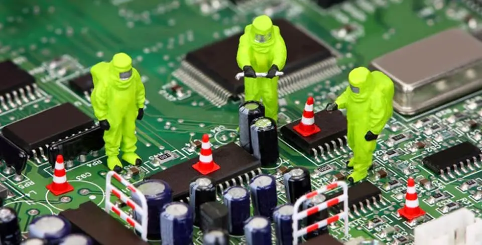

// EXPERIENCIA Y TRAYECTORIA
Ingeniería, producto y dirección tecnológica
Perfil profesional · Currículum
Mi trayectoria conecta el desarrollo de sistemas y productos con las decisiones de negocio, la coordinación de equipos y la evolución de las capacidades de una empresa.
Publicado el 30 de mayo de 2024

Una base técnica aplicada a decisiones de producto
Combino experiencia en electrónica, hardware, control e integración con trabajo en producto, operaciones y equipos. Mi formación en evaluación de proyectos aporta una perspectiva de viabilidad, inversión y riesgo a esas decisiones.
Experiencias que explican ese recorrido
- Producto y operaciones en HVAC: apoyo directo a la dirección y liderazgo de la renovación de controles, fabricación digital, almacén, procesos y equipo. Leer el caso HVAC.
- Cofundación y dirección tecnológica: desarrollo de un prototipo de enfriamiento de bebidas desde cero, validación, primeras rondas de inversión y avance hacia la industrialización internacional. Leer el caso de enfriamiento.
- Ingeniería y sistemas: antecedentes en desarrollo de producto, arquitectura de software, procesos, comunicaciones y robótica.
Podés consultar el detalle de empresas y posiciones en mi perfil de LinkedIn.
Educación
- 2021 - Maestría en Evaluación de Proyectos
- 2017 - Ingeniero Electrónico
- 2007 - Técnico Electromecánico
Antecedentes laborales
- 2024 - Actual - HVAC
- 2023 - 2024 - Ingeniero de producto
- 2020 - 2022 - Arquitectura, Calidad de Sistemas y Procesos
- 2018 - 2020 - Consumo masivo de bebidas
- 2010 - 2018 - Fibra óptica, Ingeniería de procesos
- 2007 - 2015 - Grupo de alto rendimiento
- 2012 - 2014 - Grupo de Inteligencia Artificial y Robótica
- 2007 - Laboratorio de radios
Proyectos y publicaciones
Explorar el archivo de proyectos y los casos seleccionados.
Vivencias
Información extra

Rock trip | Piedra parada
Un nuevo año volvimos a revivir este paisaje salvaje y árido, el singular monolito de 260 metros y el gran Cañón de La Buitrera.
Febrero 2015
Fmart | Psicoanálisis
Como en todo sistema hay un panel de control, de esta forma se puede ir viendo cómo interactúan las variables en juego.
Septiembre 2022Hablemos de tu proyecto
Una primera conversación para entender el problema y ver si puedo aportar valor.
// EL SIGUIENTE PASO
TU PRODUCTO.
SU PRÓXIMA ETAPA.
Una primera conversación para entender el desafío y ver si puedo aportar valor.
↗ Hablemos de tu proyecto